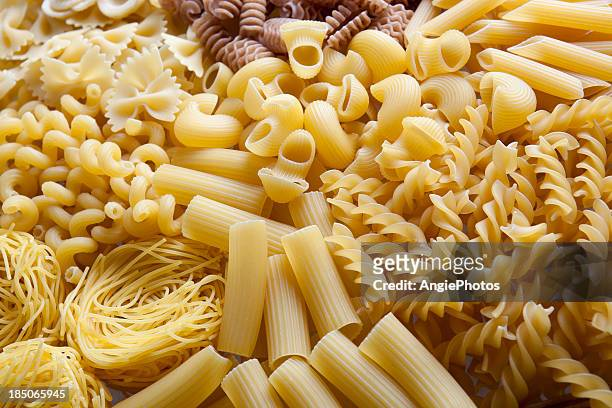

Pasta Carbonara

Description
Pasta carbonara is a classic Italian dish made with spaghetti, eggs, cheese, and pancetta or bacon. It's creamy, rich, and full of flavor.
Ingredients
- 8 ounces spaghetti
- 4 ounces pancetta or bacon, diced
- 2 cloves garlic, minced
- 2 large eggs
- 1/2 cup grated Parmesan cheese
- Salt and freshly ground black pepper, to taste
- Chopped fresh parsley, for garnish
Steps
- Cook the spaghetti according to package instructions until al dente. Drain, reserving 1/2 cup of pasta water.
- In a large skillet, cook the diced pancetta or bacon over medium heat until crispy. Add the minced garlic and cook for another minute.
- In a small bowl, whisk together the eggs and grated Parmesan cheese. Season with salt and pepper.
- Remove the skillet from heat and add the cooked spaghetti to the pan. Quickly pour the egg and cheese mixture over the hot pasta, tossing continuously until the sauce thickens and coats the pasta evenly. If the sauce is too thick, add a splash of reserved pasta water.
- Serve immediately, garnished with chopped fresh parsley and additional grated Parmesan cheese if desired.